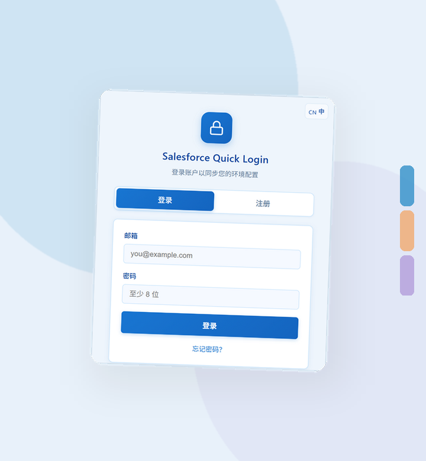
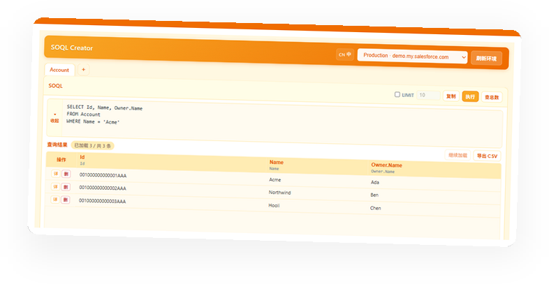
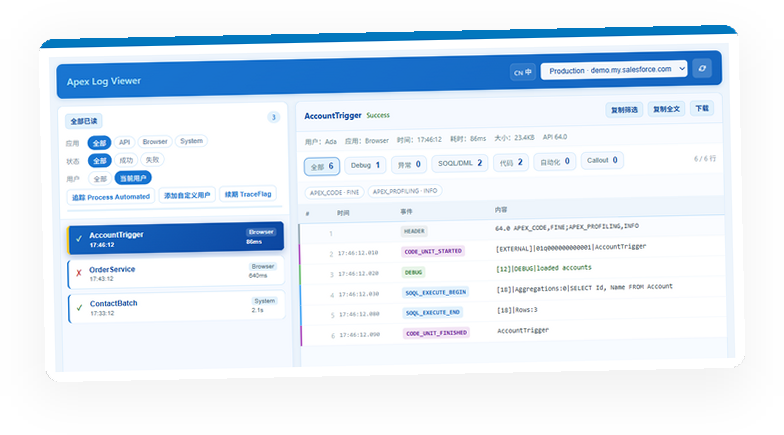
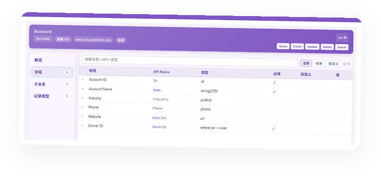

多环境
Many orgs
正式环境、沙盒、自定义登录地址，按分组整理，顺序可拖动。
Production, sandbox, and custom URLs. Group them and drag to reorder.
Salesforce Quick Login
保存正式环境、沙盒和自定义地址。需要时再打开页面上的查询、日志和对象工具。
Save production, sandbox, and custom login URLs. Open query, logs, and object tools on the page when you need them.

面向日常在多个 Org 之间切换的顾问、管理员和开发者。
Built for consultants, admins, and builders who move between orgs every day.
正式环境、沙盒、自定义登录地址，按分组整理，顺序可拖动。
Production, sandbox, and custom URLs. Group them and drag to reorder.
从侧栏直接进入已保存的 Org，少记一组口令。
Open a saved org from the side panel without hunting for passwords.
页面要求通行密钥时，在侧栏继续完成验证。
When a page asks for a passkey, finish the check in the side panel.
保存双因素验证码。也可框选屏幕上的二维码来识别。
Store two-factor codes. Or select an on-screen QR code to read it.
环境配置加密后再上传。密钥由你的密码派生。
Org settings are encrypted before upload. The key comes from your password.
用短码把环境分享给同事。对方得到的是独立副本。
Share an org with a short code. The other person gets their own copy.
它们跟着当前已登录的 Org，不要求再登一次扩展账号。
They use the org you already opened. No extra extension account needed.
在独立窗口里写查询、看结果，适合日常查数和导出。
Write queries and review results in a separate window.

查看当前 Org 的运行日志，筛选后复制或下载。
Browse logs for the current org. Filter, then copy or download.

按名称或编号快速找到对象和记录，再打开详情。
Find objects and records by name or Id, then open the detail.

安装到 Chrome 后，点击工具栏图标打开侧栏。
Install in Chrome, then open the side panel from the toolbar.
在侧栏添加正式环境或沙盒，需要时一键进入。
Add production or sandbox accounts, then sign in when you need them.
进入 Org 后，右侧色块可打开查询、日志和对象。
On an org page, the colored tabs open query, logs, and objects.
工具只会使用你已经登录的会话，不会拿去投放广告或做跨站跟踪。
Tools only use the session you already signed in with. They are not used for ads or cross-site tracking.